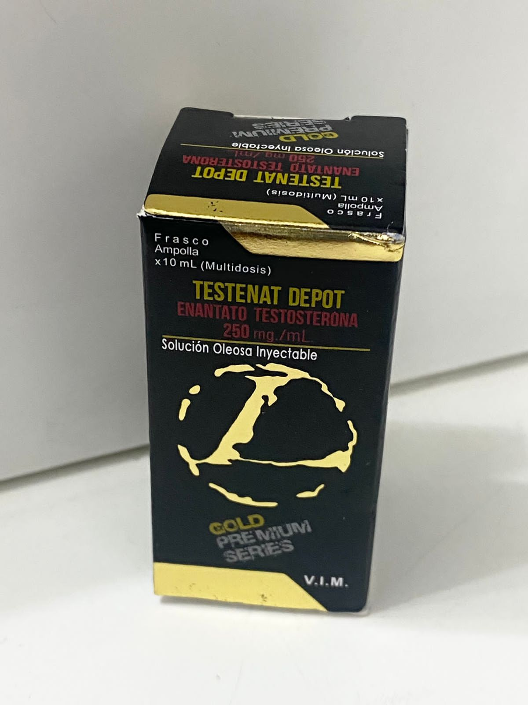

<!--Links de estilização-->
<link href="../../static/css/style.css" rel="stylesheet">
<script src="https://cdn.tailwindcss.com"></script>

<article class="grid h-full rounded-lg">
    <a href="nomepost.html" target="_blank" rel="noopener noreferrer">
        
        <figcaption class="flex flex-col gap-3 p-3">
            <h5 class="flex-grow text-xl font-bold"> Os benefícios do uso de Enantato de Testosterona</h5>
            <p class="flex-grow w-full h-56 overflow-y-scroll">
                O enantato de testosterona é uma forma de testosterona sintética frequentemente utilizada em terapias de reposição hormonal e por atletas. Aqui estão alguns dos principais benefícios associados ao seu uso:

                Aumento da Massa Muscular: Ajuda no ganho de massa muscular magra, promovendo a síntese de proteínas.
                Melhora da Força: Pode aumentar a força física, facilitando treinos mais intensos.
                Aumento da Libido: Melhora a libido e a função sexual em homens com níveis baixos de testosterona.
                Melhora da Recuperação: Pode acelerar a recuperação muscular após exercícios intensos.
                Aumento da Densidade Óssea: Contribui para a manutenção da densidade óssea, reduzindo o risco de osteoporose.
                Melhora do Humor: Pode ajudar a combater a depressão e a fadiga em indivíduos com baixos níveis de testosterona.
                Aumento da Energia: Proporciona um aumento geral nos níveis de energia e vitalidade.
                É importante notar que o uso de enantato de testosterona deve ser feito sob supervisão médica, pois pode ter efeitos colaterais e contraindicações.
                                
            </p>
            <p class="flex-grow"><small class="flex-grow text-gray-600">19 de Setembro de 2024</small></p>
            <div class="flex flex-grow w-full gap-3 px-4 py-2 border rounded shadow-sm full">
                
                <p class="my-auto"><strong>Jefferson Rosa</strong></p>
            </div>
        </figcaption>
    </a>
</article>